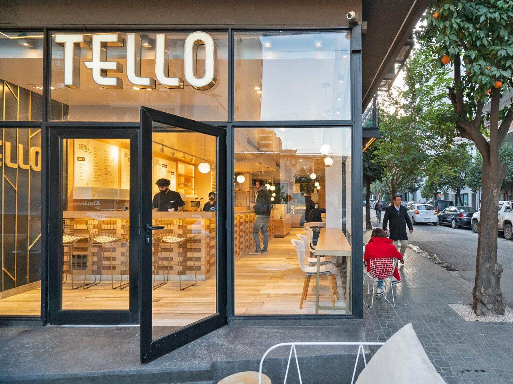

NOSOTROS
TAFI VIEJO
1943
Herencia y Tradición Familiar
Tello representa más de ocho décadas de tradición familiar, desde la apertura de la pequeña heladería en 1943 hasta la actualidad, donde la pasión por la fabricación de helados y productos de pastelería ha pasado de generación en generación.
Innovación y Expansión
A lo largo de los años, Tello ha demostrado su compromiso con la mejora continua y la innovación. Desde la modernización de la heladería original en Tafí Viejo hasta la expansión estratégica a nuevos mercados, la empresa ha evolucionado constantemente, incorporando nuevos productos, sabores y conceptos gastronómicos.Compromiso con la Calidad
Tafí Viejo 1943 Herencia y Tradición Familiar Tello representa más de ocho décadas de tradición familiar, desde la apertura de la pequeña heladería en 1943 hasta la actualidad, donde la pasión por la fabricación de helados y productos de pastelería ha pasado de generación en generación. Innovación y Expansión A lo largo de los años, Tello ha demostrado su compromiso con la mejora continua y la innovación. Desde la modernización de la heladería original en Tafí Viejo hasta la expansión estratégica a nuevos mercados, la empresa ha evolucionado constantemente, incorporando nuevos productos, sabores y conceptos gastronómicos. Compromiso con la Calidad La empresa destaca por su enfoque inquebrantable en ofrecer la mejor calidad en sus helados y productos de pastelería. Desde la ampliación de la línea de producción en 2007 hasta la apertura de sucursales que redefinieron el concepto de heladerías artesanales, Tello se ha posicionado como un referente gastronómico en la provincia, manteniendo la dedicación y la pasión por más de 80 años.
